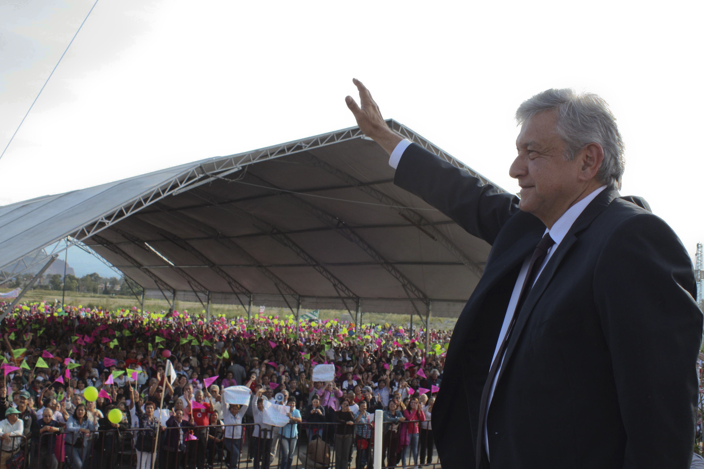

Carrera Politica
Nace en Tepetitán, municipio de Macuspana, Tabasco, en 1953.
Licenciado en Ciencias Políticas y Administración Pública por la Universidad Nacional Autónoma de México, en 1976 inicia su carrera política cuando apoya la candidatura del poeta tabasqueño Carlos Pellicer para Senador por el estado de Tabasco.
En 1977 es director del Instituto Indigenista de Tabasco donde realiza una importante labor en favor de los indígenas chontales.
Regresa al Distrito Federal en 1984 y en ese mismo año asume la Dirección de Promoción Social del Instituto Nacional del Consumidor. De esta época son sus libros Los Primeros Pasos y Del Esplendor a la Sombra.
En 1988 se une a la Corriente Democrática que encabezan, entre otros, Cuauhtémoc Cárdenas y Porfirio Muñoz Ledo. En agosto de ese mismo año asume la candidatura para gobernador del estado de Tabasco por el Frente Democrático Nacional. Publica entonces el libro Tabasco, Víctima de un Fraude.
Al crearse en 1989 el Partido de la Revolución Democrática (PRD), es nombrado presidente de este instituto político en Tabasco. Durante su periodo se estructura el PRD en ese estado, se forman comités de base en pueblos y colonias y se brinda apoyo y asesoría a campesinos y obreros.
Incansable su lucha en favor de la democracia, encabeza un éxodo a la Ciudad de México por las irregularidades cometidas por el PRI en las elecciones municipales de 1991. Los exodistas obtienen importantes logros para Tabasco y Veracruz.
En 1994 sus partidarios lanzan nuevamente su candidatura para gobernador de Tabasco.
Tras el fraude del partido oficial, que documenta ampliamente ante la Procuraduría General de la República y en su libro Entre la Historia y la Esperanza, encabeza en 1995 un segundo éxodo por la democracia, antecedido por una Proclama Nacional que plantea como ejes la defensa de la soberanía nacional,
la democracia, el desarrollo económico con sentido social, impedir la privatización de PEMEX y “Primero comer y luego pagar”.
El 9 de mayo de 1995 participa en la iniciativa de creación de una Alianza Nacional Democrática que se propone unir inconformidades, voces y acciones, luchando por causas propias pero sumadas, y rechazando sectarismos y ambiciones personales para lograr un México más democrático y más justo.
Contiende por la Presidencia Nacional del Partido de la Revolución Democrática el 17 de abril de 1996, cargo que ocupa del 2 de agosto de 1996 al 10 de abril de 1999. Durante su gestión, el PRD obtiene los mayores logros electorales y la mayor presencia nacional que ese partido político ha tenido desde su fundación en 1989.
Del periodo de López Obrador como dirigente partidista destaca que, en las elecciones de 1997, el PRD se coloca como segunda fuerza en la Cámara de Diputados al ocupar 125 curules, gana los comicios realizados en el Distrito Federal para elegir por primera vez y democráticamente al Jefe de Gobierno, y se sitúa como mayoría en la Asamblea Legislativa.
En ese mismo periodo el PRD obtiene en 1998 la gubernatura de Zacatecas y Tlaxcala, mientras que en 1999 gana el gobierno de Baja California Sur.
Andrés Manuel López Obrador se distingue también en el país por ser el principal crítico del rescate bancario, mejor conocido como FOBAPROA, hecho que ha considerado como el “fraude más grande de la historia después de La Conquista”, toda vez que cada año se paga a los banqueros 50 mil millones de pesos sólo por concepto de intereses,
lo cual significa un fuerte golpe financiero al erario público.
López Obrador no se ha quedado en la denuncia pública en torno de este asunto sino que incluso lo ha documentado ampliamente. Sobre este tema, en septiembre de 1999 publica el libro FOBAPROA, expediente abierto.
El 29 de marzo de 2000 obtiene su registro ante el Instituto Electoral del Distrito Federal como candidato a Jefe de Gobierno del Distrito Federal y el 2 de julio gana las elecciones con 37.5 por ciento de los votos emitidos, que significa 4 por ciento más que el candidato del PAN, colocando al PRI en un alejado tercer lugar con 22.8 por ciento.
Toma posesión como Jefe de Gobierno del Distrito Federal el 5 de diciembre de 2000 y con ello se convierte en el primer gobernante electo para un periodo de seis años en la Ciudad de México.
Su labor adquiere pronto notoriedad, trasciende lo local y trastoca lo nacional e internacional por su forma sui géneris de gobernar: Trabaja diariamente desde las seis de la mañana, como ningún otro gobernante, enarbola la defensa del pueblo ante intereses creados y el abuso de poder, practica una austeridad republicana en lo personal y en el ejercicio de gobierno y habla y actúa con sencillez.
Marca un hito en materia de comunicación social, al convertirse en el primer personaje público de México —y quizá de mundo— que ofrece todos los días, poco después de las seis de la mañana, una conferencia de prensa a la que asisten reporteros de los medios escritos, electrónicos y de agencias de noticias, todos ellos de cobertura nacional y, a medida en que avanza su gestión,
llama la atención de los medios del interior del país e internacionales.
